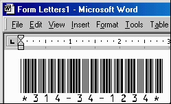

 Our Free Code 39 TrueType Barcode Font allows you to print numeric bar codes with the Code 3 of 9 symbology.
This font may only be used for personal use and by organizations that are non-profit, educational or have a gross annual revenue of less than $250,000 USD. Any other use requires a purchase of our Code 39 Font Advantage Package.
This font does not contain the characters A-Z, just the numbers and symbols. If you need to encode letters in barcodes or if you need this font in Macintosh, PCL, laserjet soft font or PostScript formats, you will need to purchase our Code 39 Font Advantage Package which is supplied in 6 different bar code heights and 4 different versions - a total of 24 fonts.
[IDAutomation.com Home | ORDER NOW | Download Free Barcode Font]
INDEX
To install the TrueType font in Windows, run the INSTALL.EXE program in the ZIP file download or perform the following for manual installation:
To create the correct output for the Code 39 barcode font you will need to type in the corresponding number with asterisks between them, for example *153969*. In Microsoft Word, you will need to use "!" instead of the asterisk because of a formatting issue. For example: !153969!
We have included Microsoft Access, Excel and Word examples of use in the package. After installation, you can find icons to these examples in the Start - Programs - IDAutomation.com Code 39 Font program group. In our Microsoft Access example, we use the ID field as the barcode to look up records. This makes the lookup process very simple because every database has an ID field.
If you find that you need a more compact barcode type than Code 39, consider Code 128 or a 2D symbology such as PDF417 or DataMatrix. If you need a barcode type that can still be read when damaged, consider PDF417 or DataMatrix. To see an evaluation of barcode sizes and types, refer to that portion of our Barcoding for Beginners Tutorial.
To learn more about using Code 39, refer to the Code 3 of 9 FAQ and Tutorial.
Our Code 39 fonts have been specially designed to be able to produce dependable barcodes when printed at small point sizes. With a 600 DPI laser, the Code 39 font can be printed as small as 5 or 6 points if the scanner supports reading it. We have been able to dependably scan our Code 39 font printed at 6 points with the Intermec CCD Scanner we sell at our website.
We also sell an easy to use plug and play USB scanner that can be used on any computer with a USB port including Windows and Macintosh systems. It can read the Code 39 font printed as small as 5 points. All you need to do is plug it in and scan. The scanner acts as an external keyboard, anything you scan is entered in your computer as if you typed it from the keyboard.
If you need an industrial strength scanner, consider the Sabre 1400. It reads small, poor and damaged barcodes up to 7" wide from up to 19" away. It can withstand multiple 6 foot drops to concrete and it has a wide temperature range operation. It reads our Code 39 font at just 4 points - the smallest size any affordable scanner can read.The barcode scanners we recommend are easier to use than wands. If you are going to be scanning several barcodes, we suggest a hands-free scanner solution such as the Intermec scanner with the hands free stand or the Metrologic Laser Scanner that includes a stand.
If you are interested in a free keyboard wedge scanner solution for scanning barcodes and you have a CueCat wand scanner, you can download CatNip for free from Goldstein Software to decode Code 128, Interleaved 2 of 5, Code-39, EAN and UPC barcodes. The CueCat cannot usually read barcodes printed smaller than 12 points and it works best at 16 to 24 points. The CueCat is available for free at most Radio Shack locations. IDAutomation.com, Inc. does not recommend using the CueCat for this purpose because the CueCat license restricts its use. We also have a smart bar code wand that does not require any software to operate and it can read the Code 39 font as small as 8 points.
We also have many other products to offer for barcoding purposes including:
|
Point Size |
Approximate X dimension |
Approximate Character Width | ||
| 24 | .42 mm | .016" | 6.72 mm | .265" |
| 16 | .28 mm | .011" | 4.48 mm | .177" |
| 12 | .21 mm | .008" | 3.36 mm | .130" |
| 8 | .14 mm | .006" | 2.24 mm | .090" |
| 6 | .105 mm | .004" | 1.68 mm | .066" |
| Wide to Narrow Ratio: | 3:1 | |||
Because this is a free product we cannot offer any other support than what is documented at the website. Phone and email support are only provided for users that purchase our products. The following links may be helpful in solving problems:
|
Other Quick Links: [IDAutomation.com Home | Fonts | ActiveX | Java | Scanners] |
Copyright © IDAutomation.com, Inc. 1999-2001. All trademarks are the property of their respective owners.